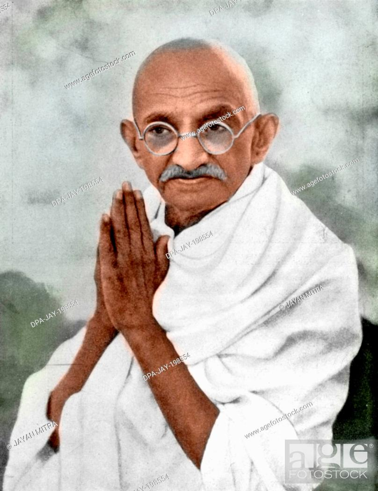
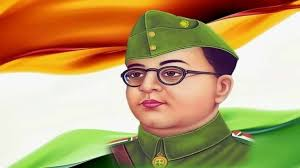
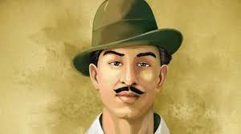
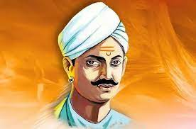
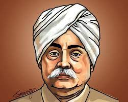
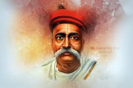
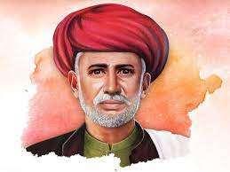

The immense sacrifices that Mohandas Karamchand Gandhi made for India earned him the title of “Father of the Nation”; he was born on October 2, 1869. Along with inspiring numerous other independence movements and human rights movements around the world, he not only helped lead India to independence but also played a significant role in its victory.
One of the most successful Indian nationalists in history was Subhash Chandra Bose. He was created in Cuttack on January 23, 1897. He was widely referred to as Netaji. He was a fervent nationalist, and his unwavering patriotism made him a hero.


On September 28, 1907, in Banga, Pakistan, Bhagat Singh was born. He was among the most extreme Indian liberation fighters. In the freedom struggle for India, he was a divisive but respected figure. His involvement in a plot to assassinate James Scott, a British police superintendent, in 1928 as vengeance for Lala Lajpat Rai’s demise was revealed.
Mangal Pandey, a well-known Indian freedom fighter who was born on July 19th, 1827, is frequently seen as the forerunner of India’s first war for independence, the 1857 uprising against the British. As a soldier in the 34th Bengal Native Infantry regiment of the East India Company‘s army, he led the Sepoy rebellion that ultimately resulted in the 1857 uprising.


On November 19, 1828, the Queen of Jhansi Rani Laxmibai was born in Varanasi. She goes by the stage name Manu and goes by the name Manikarnika Tambe. She was one of the most tenacious soldiers in the Revolutionary War. She inspired numerous Indian women to fight for their country’s freedom, and she still inspires women to defend their rights today.
The Punjab Kesari, Lala Lajpat Rai, joined the Indian National Congress. He was one of the founding members of the 1894-founded Punjab National Bank. He established the Dayanand Anglo-Vedic School in Lahore in 1885. The Indian Home Rule League of America was established by him in New York in 1917.


Bal Gangadhar Tilak founded the Indian National Congress’ hardline wing. He started the Ganeshotsav and Shivaji Utsav celebrations in 1894. He spread nationalism among the populace through these two celebrations. He started the Ganeshotsav and Shivaji Utsav celebrations in 1894.
Jyotiba Phule founded India’s first girls’ school in August 1848, and it was located in Tatyasaheb Bhide’s home. Later, he opened two additional schools for girls and people from lower castes (Mahars and Mangs). He was an early supporter of women’s education in India because he thought that only education could alleviate social injustices.
